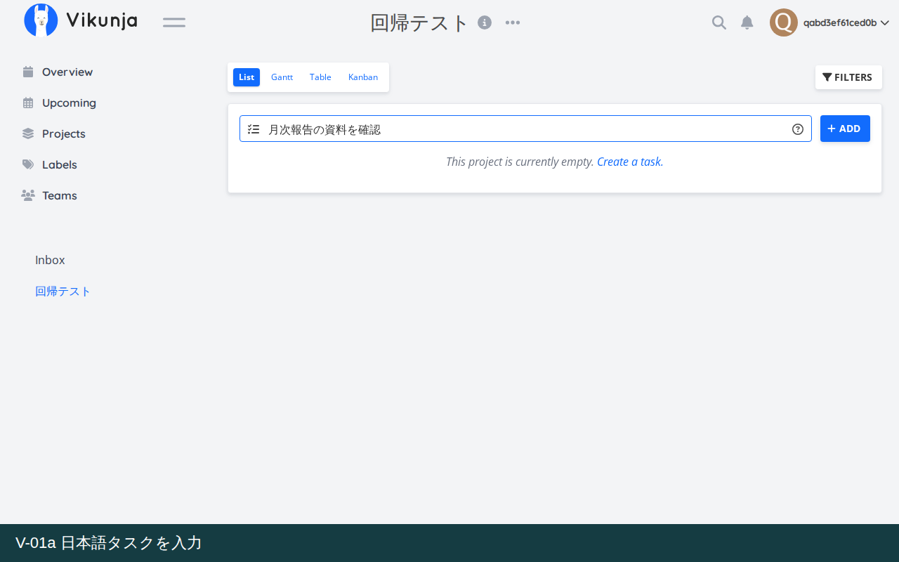
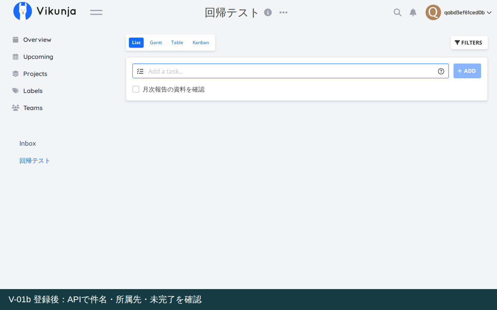

日本語タスクの登録
画面の一覧で件名を確認し、作成時のIDを使ってAPI上の件名・プロジェクト・未完了状態を照合しました。
検査画面




判定結果 新しいタスクが一覧に表示されました。作成時の ID で再取得すると、件名と所属先が一致し、状態は未完了でした。
操作動画
ローカルでの録画 · Chromium · 72da163
画面の一覧で件名を確認し、作成時のIDを使ってAPI上の件名・プロジェクト・未完了状態を照合しました。


判定結果 新しいタスクが一覧に表示されました。作成時の ID で再取得すると、件名と所属先が一致し、状態は未完了でした。
ローカルでの録画 · Chromium · 72da163